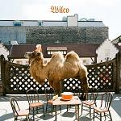
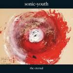
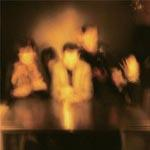
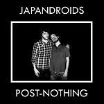
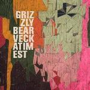
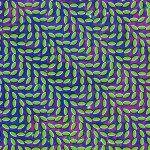

Top 50 Albums of 2009 (Part Two)
By No Ripcord Staff
 24. Sunn O)))
24. Sunn O)))
 22. Mount Eerie
22. Mount Eerie
 21. Sunset Rubdown
21. Sunset Rubdown
 19. Camera Obscura
19. Camera Obscura
 18. Future of The Left
18. Future of The Left
 17. St. Vincent
17. St. Vincent
 16. Raekwon
16. Raekwon
 15. Girls
15. Girls
 14. Neko Case
14. Neko Case
Neko Case built upon her ever-growing reputation in 2009 with the wonderfully crafted Middle Cyclone. A slice of canyon-dwelling Americana, Case’s powerful vocals and literary prose mark her out as a 21st Century Joni Mitchell. Middle Cyclone launches in with tingly guitar and a bold proclamation (“My love, I am the speed of sound”) and doesn’t disappoint. From defiant anthems (People Got a Lotta Nerve) to heartfelt, yearning ballads (Don’t Forget Me), Middle Cyclone showcases a vast range of human emotion. Neko Case shows that even in a saturated market, there’s still space for a lyrically sharp, strong, opinionated, female singer-songwriter - tip your (ten gallon) hat to her. (Joe Rivers)
 11. Dinosaur Jr.
11. Dinosaur Jr.
 10. Wild Beasts
10. Wild Beasts
 8. The Thermals
8. The Thermals
 7. Flaming Lips
7. Flaming Lips
 6. Dirty Projectors
6. Dirty Projectors
 5. The Pains of Being Pure at Heart
5. The Pains of Being Pure at Heart
 4. Phoenix
4. Phoenix
“Wolfgang Amadeus Phoenix”
This year I found myself in a position that I'm sure many of my fellow readers and writers can relate to, with my cynicism towards the institutions that have come to dominate music criticism reaching a fever pitch while I simultaneously find myself absolutely enamored with a good deal of the music that was buffered and battered by the nebulous “hype” on which these institutions thrive. For me the Phoenix album is the apex of this trend, the record that pitched a remarkable dissonance between what I wanted to enjoy based on principle and what I truly did enjoy based on sound alone. Though I no longer feel like I'm slumming when I jam Wolfgang, I still sense a tinge of embarrassment when I consider that this hyper-cool, super-polished half hour bourgeois pop album is very much my “Record of the Year.” That tinge, that spine-shiver, reminds me of the lesson that I'm still learning, a lesson that this joyous record has helped me learn: what you say you love and what you really love should be one in the same thing. Fold it! (Tom Whalen)
So this is it. The votes have been counted, the blurbs have been written, and all of the fiddly little HTML tags have been inserted... ladies and gentleman, it is my great pleasure to share with you the No Ripcord Top 25 Albums of 2009 list. Enjoy, debate, share, and most importantly, feel free to fume in silence at the omission of your personal 2009 favourite. Unless it was that awful Muse album. See you in 2010! -- David Coleman
. . .
25. The xx
“xx”
No one encapsulated the eponymous debut album of south London quartet the xx as succinctly as they themselves did: on VCR, singer Romy Madley Croft murmurs, "We, we live half in the daytime, and we, we live half at night." Few could have imagined the pairing of r&b—a genre sunlit by vocal opulence—with such sparse, nocturnal instrumentation, but that’s just what the xx did. Vocal duo Croft and Oliver Sim colour lyrics with scoops, swoops and shakes straight out of the Aaliyah textbook, accompanied by solitary guitars, fragile drumming and electronic syncopations. It’s hard to imagine a more tightly arranged album released this year—or, for that matter, a more innovative one. (Michael Skinnider)
24. Sunn O)))“Monoliths & Dimensions”
On paper, Stephen O’Malley and Greg Anderson make a strong case for being the most ridiculous band of the year. They tune their guitars to drop-C and drop-B. They take the stage (preferably in something like a cathedral) in Druid-inspired robes. Their pieces drop the listener into a doom-hole of noise, amplifier feedback, and distortion. And yet, their seventh studio album is compulsively, horrifyingly listenable.
If you turn it off after all seventeen minutes of the John Cage-style nightmare of atonality and broken poetry that is Agartha, be prepared to break out your supply of Ambien, because otherwise sleep will probably not be an option. However, the final track, Alice, turns out to be downright uplifting. With the help of a brass section that includes the likes of trombonist Julian Priester (a former Sun Ra sideman), the album takes the listener all the way from Mordor to Miles Davis territory. The result is a turgid, beautiful, and weirdly comforting record. Maybe sometimes the best way to help people relax is to first scare the hell out of them. (Ryan Faughnder)
23. Yeah Yeah Yeahs
“It’s Blitz!”
We all get that it's a departure, but that doesn't really seem possible. In a sonic sense, there's less fat to chew, and most of the output comes off across as a misguided freak folk vs. new wave project--and, in an oversimplified way, it is. But It’s Blitz! is also a bizarre, deft, and ultimately a completely memorable experiment. There’s very little Yeah Yeah Yeahs can do in the way of shock value; however, the consistency in their willingness to reinvent has always been a refreshing elemental characteristic. It’s Blitz! plays with even that expectation and creates a wholly unique experience, blending the visceral with the vulnerability, and wrapping it within a criminally pop outer shell. It’s a Trojan Horse of an album, and it just may be their masterpiece. (Daniel Rivera)
22. Mount Eerie “Wind’s Poem”
(P.W. Elverum & Sun)
Original Review - Buy it from Insound
For those of us that rank The Glow Pt. 2 as one of their favourite albums, Phil Elverum’s Mount Eerie project had yet to yield any thing near comparable. Wind’s Poem showed that there was still hope yet, however. Dense, ambitious, but lacking some of the meandering qualities of his more recent work, it took unexpected turns with spooky ambient epics and Twin Peaks references. It might not have been an easy listen, but it sure was a rewarding one. (Nick Fenn)
Original Review - Buy it from Insound
For those of us that rank The Glow Pt. 2 as one of their favourite albums, Phil Elverum’s Mount Eerie project had yet to yield any thing near comparable. Wind’s Poem showed that there was still hope yet, however. Dense, ambitious, but lacking some of the meandering qualities of his more recent work, it took unexpected turns with spooky ambient epics and Twin Peaks references. It might not have been an easy listen, but it sure was a rewarding one. (Nick Fenn)
21. Sunset Rubdown“Dragonslayer”
Spencer Krug appears to be an artist that just isn’t comfortable sitting still and a result of his fidgetiness we have been rewarded with one of 2009’s most ambitious pop records. It feels grandiose and bold yet remaining cohesive and tight. It’s a polished affair and is a record the seeps ease from every pore. It’s a record that deals equally in fragility as it does stark aspiration and this is no easy feat. (Daniel Dylan Wray)
20. Wilco
“Wilco (The Album)”
Surely the equation of Jeff Tweedy’s ambition with Wilco is a sine curve charted between 0 and  , slowly increasing, reaching a maximum value with Yankee Hotel Foxtrot (pi/2), and slowly ebbing to the present day. Still, it’s notable that the quality of his songwriting reached a plateau in 2001 and has barely diminished. I’d love to see Jeff push himself again, but I’m still a big fan; one who refuses to hold his collaboration with Feist against him. That’s because when I hear Bull Black Nova I know that old black magic still lurks in his soul. (Alan Shulman)
, slowly increasing, reaching a maximum value with Yankee Hotel Foxtrot (pi/2), and slowly ebbing to the present day. Still, it’s notable that the quality of his songwriting reached a plateau in 2001 and has barely diminished. I’d love to see Jeff push himself again, but I’m still a big fan; one who refuses to hold his collaboration with Feist against him. That’s because when I hear Bull Black Nova I know that old black magic still lurks in his soul. (Alan Shulman)
19. Camera Obscura“My Maudlin Career”
Big and reverby, Camera Obscura's sweeping tales are told in the perfect setting on their fourth album. My Maudlin Career holds elements of classic radio pop, sunny beachball numbers, and the longing of a forgotten 1950's classic. Upbeat tracks like French Navy are perfectly balanced with the yearning of Careless Love and James, while all are covered with a gorgeous near-overcropping of strings, oohs and ahhs. Tracyanne Campbell sings, still with decided vulnerability, from a more mature distance. Heartache is taken with sunshine and the general "it is what it is" attitude of adulthood. Perfectly suited for any season, Camera Obscura are able to catch a very specific side of love that isn't highlighted nearly enough in pop music. (Brett Oronzio)
18. Future of The Left“Travels With Myself And Another”
Future of the Left is made up of assholes. Obnoxious, nihilistic assholes with a kickass guitar tone and a knack for lyrics that range from the socially observant to the utterly absurd with some songs landing artfully in between. They’re loud, ridiculous, and my eighth grade brother loves them and thinks Rick’s a douche bag. The album is a journey through a sarcastic psyche, someone who cares for nothing and mocks everything, no matter how important or trivial it may be. They avoid the undeserved pretentiousness that their more mainstream post-hardcore peers often fall into; they realize their own flaws and don’t have a false sense of superiority about their social observations, they just don’t like you very much. (Andrew Baer)
17. St. Vincent“Actor”
Annie Clark’s follow-up isn’t merely an act of make up trickery, but a full on grandiose spectacle of sounds, annihilating anything you thought possible amidst the restraints that define a pop album. Like a piece of abstract art, it’s deconstructed, only to start from scratch and pick up the pieces with a stronger sense of composure. Even if Actor is assorted with an eclectic inventory of instruments – strings, fuzzed out synth work, piano driven melodicism – the real highlight comes from Clark’s vocals, which are a cross between saintly, yet vicious in their release. There’s an accomplished sense of authorship in these songs – not to mention, the simple fact that she can effortlessly shred a guitar with elegance. Always soothing, yet with a subject matter that’s disarmingly under toned with great profundity, Clark has created a poignant and quite unpredictable piece that only comes along when an artist is dauntlessly immersed in her own imagination. (Juan Edgardo Rodriguez)
16. Raekwon“Only Built For Cuban Linx Pt. 2”
Sure, hip-hop headed into the toilet in 2009, but don't tell that to Raekwon. Armed with inspired production and a chip on his shoulder, the Wu vet put rap on his back and brought the game back to a time when Method Man could still rhyme, Ghostface Killah was still an unhinged super villain, and gangster shit still meant something. Only Built For Cuban Linx Pt 2 can't save the genre, but as far as death rattles go, it's hard to stop thundering of tracks like House of Flying Daggers, 10 Bricks and Broken Safety. The past has never sounded so vibrant. (Nate Adams)
15. Girls“Album”
Album was the perfect antidote to the complex, numbing mess that we find ourselves in at the end of the decade. Perhaps it shouldn’t be surprising that the Girls’ Christopher Owens, himself a product of a numbingly tragic past, managed to create one of the most memorable records of 2009. In a culture where satire, sarcasm and emotional detachment are the currency of pop culture, Album wears it heart on its sleeve. The themes are nothing new: relationships, love, mortality. The simplicity of its pop structure, along with Owens’ painful honesty, paint a beautiful, bitter-sweet portrait of modern American life. (Alejandro Martinez)
14. Neko Case“Middle Cyclone”
Neko Case built upon her ever-growing reputation in 2009 with the wonderfully crafted Middle Cyclone. A slice of canyon-dwelling Americana, Case’s powerful vocals and literary prose mark her out as a 21st Century Joni Mitchell. Middle Cyclone launches in with tingly guitar and a bold proclamation (“My love, I am the speed of sound”) and doesn’t disappoint. From defiant anthems (People Got a Lotta Nerve) to heartfelt, yearning ballads (Don’t Forget Me), Middle Cyclone showcases a vast range of human emotion. Neko Case shows that even in a saturated market, there’s still space for a lyrically sharp, strong, opinionated, female singer-songwriter - tip your (ten gallon) hat to her. (Joe Rivers)
13. Sonic Youth
“The Eternal”
SY makes little progress on The Eternal, but the music here, as with 2006’s Rather Ripped, illustrates the difference between a band comfortably doing what it’s best at and a band doing what it’s the best at. Unlike, say, U2, the band members feel no need to alter their direction in order to challenge expectations, probably because they know that what’s normal for them still provides plenty of surprises for the rest of us, such as the natural harmonics on Leaky Lifeboat that sound like tones from an amplified xylophone. They’ve already changed the indie music world; now, for a while at least, they get to rule that world. (Ryan Faughnder)
12. The Horrors
“Primary Colours”
(XL Recordings)
Original Review - Buy it from Insound
So, The Horrors didn’t earn Peter Murphy’s cape. Initially thought to be a gothic novelty whose time had ended once their label said, “see ya,” reinvention became the focus and their second album, Primary Colours, altered many a perception. Though The Horrors owe most of their not-so-newfound sound to the post-punk/new wave model that’s been kicking out the same tired jams over the last couple years, Primary Colours sounds new, its ghostly and intensified art rock kaleidoscope radiating the sort of atmosphere one can sink into. Within seconds of Mirror’s Image, the swirling sonic lace that spirals through its rhythm expands the album into an experience, the type of rock organism that mainlines its influences but refuses to imitate. (Sean Caldwell)
“Primary Colours”
(XL Recordings)
Original Review - Buy it from Insound
So, The Horrors didn’t earn Peter Murphy’s cape. Initially thought to be a gothic novelty whose time had ended once their label said, “see ya,” reinvention became the focus and their second album, Primary Colours, altered many a perception. Though The Horrors owe most of their not-so-newfound sound to the post-punk/new wave model that’s been kicking out the same tired jams over the last couple years, Primary Colours sounds new, its ghostly and intensified art rock kaleidoscope radiating the sort of atmosphere one can sink into. Within seconds of Mirror’s Image, the swirling sonic lace that spirals through its rhythm expands the album into an experience, the type of rock organism that mainlines its influences but refuses to imitate. (Sean Caldwell)
11. Dinosaur Jr. “Farm”
(Jagjaguwar)
Original Review - Buy it from Insound
No one knew quite what the re-booted Dinosaur Jr. would produce. If Beyond was an unexpected, and unprecedented, return to form, then Farm was a welcome continuation. What it lacked in surprises was more than made up for with the quality of the song writing. It would be easy to mistake this as the sound of band getting too comfortable in their own skin, and Farm might have been the most quintessentially “Dinosaur Jr.” album they’ve made yet, but when it ain’t broke... (Nick Fenn)
No one knew quite what the re-booted Dinosaur Jr. would produce. If Beyond was an unexpected, and unprecedented, return to form, then Farm was a welcome continuation. What it lacked in surprises was more than made up for with the quality of the song writing. It would be easy to mistake this as the sound of band getting too comfortable in their own skin, and Farm might have been the most quintessentially “Dinosaur Jr.” album they’ve made yet, but when it ain’t broke... (Nick Fenn)
10. Wild Beasts“Two Dancers”
One of the most staggering elements to take in from Two Dancers is the shear magnitude of their progression; within a year this band have not only matured, but reached such a level of comfort and seamlessness to their song writing that you wonder if they have even slept in the last twelve months. The production hums, the instruments flow and the vocals soar throughout. A wonderfully melancholic, beautiful and enchanting record. (Daniel Dylan Wray)
9. The Mountain Goats
“The Life of the World to Come”
(4AD)
The Life of the World to Come is the 17th album from The Mountain Goats. In spite of the extensiveness of its scope (the album is an exploration of the Bible; each song is inspired by and titled after a single verse), Darnielle and co have returned to the familiar territory of their stripped-down earlier work, such as The Sunset Tree. With the exception of Psalms, 40:2 (which features a vigorously strained vocal performance), Darnielle whispers his hyper-literate ruminations upon the Bible and the minutiae of life with skilful restrain, and a careful attention to detail that never feels affected. As reliably powerful and unsentimental as ever, Life is a welcome addition to The Mountain Goats’ discography, and ends Darnielle’s decade on a professional high. (Paul Fowler)
8. The Thermals“Now We Can See”
This is a record to get you banned from driving. Spurred on by the euphoric strains of Now We Can See, I’ve caught myself absentmindedly pushing my creaky Volkswagen to its very limits, belting out the lyrics with one fist in the air and the other barely touching the wheel. The Thermals have delivered an album packed full of honest indie-rock anthems. There are no fancy tricks here – it’s just bass, drums, guitar, and a conveyor belt of vintage hooks. And really, what more do you need? (David Coleman)
7. Flaming Lips “Embryonic”
This is one of those left turns that only makes sense in the context of a long career – one that runs the gamut from unfashionable psychedelia, to top 40, format experimentation, audiophile joy pop, and TV commercials. Reviewing their previous album I noted how the Lips seemed to be revisiting their early 70s, AM radio and prog-rock roots. Here they take it a step further and make their own Saucerful of Secrets. The execs at Target, scouring this record for another Do You Realize? are surely scratching the heads and returning to the gentler climes of Billboard’s Alternative Chart. ‘Cuz this is music for navigating the astral plane, using only chemicals, botanicals or pure spiritual power for fuel. So I say to you modern day Mad Men, turn off your mind, relax and float downstream. Your money’s no good here. (Alan Shulman)
6. Dirty Projectors“Bitte Orca”
Almost everything Dave Longstreth does is an acquired taste. His voice breaks through falsetto ceilings and crashes down again with equal force, and his guitar leads can sometimes sound like George Harrison and Jimmy Page duelling to see who can blow the other’s mind first. Add that to the feeling that his brilliantly angular arrangements have “control freak” written all over them. So, perhaps it fits that when he shares songwriting and lead-singing duties with band-mate Amber Coffman, they create one of the best songs of the year with The Stillness is the Move.
If some of those descriptions make the album sound inaccessible or pretentious, remember that its predecessor was Longstreth’s attempt to do a indie-pop rewriting of Black Flag’s Damaged from memory after not listening to the source material for fifteen years. Bitte Orca is as user friendly as the band gets, but without sacrificing ambition or virtuosity. With nine adventurous songs, and not a single dud among them, this disc has established Dirty Projectors as the indie guitar-pop band to beat. (Ryan Faughnder)
5. The Pains of Being Pure at Heart“The Pains of Being Pure at Heart”
An amalgam of all of the things that were good about late 80’s and early 90’s college radio are gathered up and siphoned back here with rediscovered clarity. The distant, but angelic vocals of their front man, Kip Berman are sonically akin to My Bloody Valentine, but with upbeat melodies that rise above the dirge. There are slumbery, hazy cues from Field Mice and The Jesus and Mary Chain with the persistence of more obvious influences like The Cure or The Church. For detractors the word is derivative, for admirers the word is inspired. Pains rise above their name-dropping prototype peers on the plains of authenticity and heartfelt melancholia. Most importantly, at the heartbeat of all of this hoopla, when stripped of all of the fuzz, comparisons and reverb these are plainly blissful pop songs. (Brett Oronzio)
4. Phoenix“Wolfgang Amadeus Phoenix”
This year I found myself in a position that I'm sure many of my fellow readers and writers can relate to, with my cynicism towards the institutions that have come to dominate music criticism reaching a fever pitch while I simultaneously find myself absolutely enamored with a good deal of the music that was buffered and battered by the nebulous “hype” on which these institutions thrive. For me the Phoenix album is the apex of this trend, the record that pitched a remarkable dissonance between what I wanted to enjoy based on principle and what I truly did enjoy based on sound alone. Though I no longer feel like I'm slumming when I jam Wolfgang, I still sense a tinge of embarrassment when I consider that this hyper-cool, super-polished half hour bourgeois pop album is very much my “Record of the Year.” That tinge, that spine-shiver, reminds me of the lesson that I'm still learning, a lesson that this joyous record has helped me learn: what you say you love and what you really love should be one in the same thing. Fold it! (Tom Whalen)
3. Japandroids
“Post-Nothing”
In a more perfect world, every child would receive a copy of Post-Nothing on their 16th birthday as a means to understand what they're about to go through. No band in recent history has captured the wild joy and reckless fear of being young so simply and passionately as Japandroids, who fill their tracks with enough grit and honesty to compensate for their lean guitar-drum-vocal setup. From the album opening crunch of The Boys Are Leaving Town to the to the plodding quiet confidence of Crazy / Forever to the almost heart wrenching excitement bubbling on Young Hearts Spark Fire, no rock album will make you feel more exposed, excited or (irony be damned) alive. (Nate Adams)
2. Grizzly Bear
“Veckatimest”
2009 was the year of the perfectly and intricately constructed album. There was Merriweather Post Pavilion, Bitte Orca and Veckatimest, a record that strived for perfection and came as close as it could come. It’s layered and dense yet surprisingly economical; every piece has its place and nothing is ever overdone. It does more than just adequately follow Yellow House, it makes it sound obsolete. It manages to sound meticulous and spontaneous at the same time. Grizzly Bear bursts out of the dim and dusty attic that held Yellow House and into the brilliant sunlight, looking out at their haven on the southern point and eager to explore the vast world laid out before them. (Andrew Baer)
1. Animal Collective
“Merriweather Post Pavilion”
Yes, of course you knew it. There’s been a nagging inevitability about our choice for the #1 record of 2009 ever since Tom Whalen dropped that perfect ten review way back on January 5th, but that doesn’t make Merriweather Post Pavilion any less deserving a winner. It sailed into our lives on a wave of hype, daring the competition to go one better, but even then we doubted that anyone could release an album capable of knocking Merriweather off its impressive perch. We don’t compile a “Best Songs” list here at No Ripcord, but if we did I’d be making a solid argument for the inclusion of at least four of these songs (My Girls, Summertime Clothes, Brothersport, In The Flowers) in the top ten. If that makes Merriweather sound like a pop album, it’s probably because it is – one of the greatest pop albums of the 00s and a career highlight from the decade’s most pioneering act. (David Coleman)
. . .
Please get involved and discuss our selections - and your favourite music of 2009 - in the comments section below. To read part one (#50 - #26) please click here.
22 December, 2009 - 20:32 — No Ripcord Staff